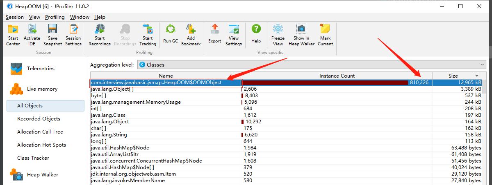

在虚拟机的规范中，除了程序技术器外，其他的几个运行时数据区都有发生OutOfMemoryError异常的可能，下面将通过实例验证异常发生的几个场景。
Java堆溢出
Java堆中主要存储对象实例，只要不断创建对象，保证GC Roots到对象之间有引用链，避免垃圾回收清除这些这些对象，那么在对象数量达到最大堆的容量限制后就会产生内存溢出现象。
1 | /** |
1 | Exception in thread "main" java.lang.OutOfMemoryError: Java heap space |
在这里我们用内存分析工具JProfiler观察一下内存的使用情况。如下图所示，OOMObject对象实例数达到了810326，占用空间12965kb。

首先我们要分清楚到底是出现了内存泄漏还是内存溢出，虽然内存泄漏的堆积结果会导致内存溢出，但是需要判断我们的对象是否应该存活还是被恶意的引用。是应该修改代码还是对JVM调优，这时就需要使用相关工具对内存和对象的引用进行分析。
- 关于如何使用JProfiler分析，将在“实战：JProfiler分析OOM异常”中体现。
虚拟机栈和本地方法栈溢出
关于虚拟机栈和本地方法栈，Java虚拟机规范中描述了两种异常情况：
- 如果线程请求的栈深度大于虚拟机所允许的最大深度，将抛出StackOverflowError异常。
- 如果虚拟机在扩展栈时无法申请到足够的内存空间，则抛出OutOfMemoryError异常。
下面分别用两段代码展示这两种异常。
StackOverflowError
下面两种方式都可实现StackOverflowError异常：
- 使用-Xss参数减小栈内存。
- 定义大量的本地变量，增加此方法帧中本地变量表的长度。
1
2
3
4
5
6
7
8
9
10
11
12
13
14
15
16
17
18
19
20
21/**
* VM参数：-Xss128k
*/
public class StackSOF {
private int stackLen = 1;
public void stackLeak() {
stackLen++;
stackLeak();
}
public static void main(String[] args) throws Throwable {
StackSOF stackSOF = new StackSOF();
try {
stackSOF.stackLeak();
} catch (Throwable e) {
System.out.println("stack length: " + stackSOF.stackLen);
throw e;
}
}
}1
2
3
4
5
6stack length: 18667
Exception in thread "main" java.lang.StackOverflowError
at com.interview.javabasic.jvm.gc.StackSOF.stackLeak(StackSOF.java:15)
at com.interview.javabasic.jvm.gc.StackSOF.stackLeak(StackSOF.java:15)
at com.interview.javabasic.jvm.gc.StackSOF.stackLeak(StackSOF.java:15)
……后续省略OutOfMemoryError
操作系统分配给每个进程的内存是有限制的，譬如32位虚拟机在windows的限制为2GB，那操作系统分配到进程的最大内存，减去Xmx（最大堆内存），再减去MaxPermSize（最大方法区内存），程序计数器占用少忽略不计，最后剩下的内存就由虚拟机栈和本地方法栈瓜分了。所以每个线程分配到的站容量越大，可以建立的线程数就相应减少，建立线程时就容易耗尽剩余的内存。
在这种多线程导致的内存溢出的情况下，我们如果无法减少线程数或者更换为64位虚拟机，那只能通过减少最大堆内存和减少栈容量来换取更多的线程。1
2
3
4
5
6
7
8
9
10
11
12
13
14
15
16
17
18
19
20
21
22
23
24
25/**
* 这里我们稍微把栈内存调大一些
* VM参数：-Xss2m
*/
public class StackOOM {
private void dontStop() {
while (true) {
}
}
public void stackLeakByThread() {
while (true) {
Thread thread = new Thread(() ->
dontStop()
);
thread.start();
}
}
public static void main(String[] args) {
StackOOM oom = new StackOOM();
oom.stackLeakByThread();
}
}注：本段代码很可能造成系统假死，请小心运行。1
Exception in thread "main" java.lang.OutOfMemoryError: unable to create new native thread
方法区和运行时常量池溢出
该区域异常与jdk版本有关，JDK1.7开始逐步移除永久代，运行时常量池已经不在分配在永久代了，所以就此异常仅仅是JDK1.7以前的版本。
常量池溢出
1 | /** |
1 | Exception in thread "main" java.lang.OutOfMemoryError: PermGer space |
以上输出结果仅出现在JDK1.7之前的版本，1.7及之后的版本均不会出现此异常，while循环将会一直执行。
CGLib引起的方法区溢出
方法区用于存放Class相关信息，如类名、常量池、字段描述、访问修饰符、方法描述等信息，所以我们可以借助CGLib动态生成Class加入方法区，代码如下：
1 | /** |
JDK1.6输出：
1 | Caused by: java.lang.OutOfMemoryError: PermGen space |
JDK1.7输出：
1 | Caused by: java.lang.OutOfMemoryError: Java heap space |
JDK1.8通过设置MetaSpaceSize 和 MaxMetaSpaceSize限制Metaspace大小，输出：
1 | Caused by: java.lang.OutOfMemoryError: Metaspace |
直接内存溢出
直接内存大小可以通过-XX:MaxDirectMemorySize设置，默认与-Xmx一样。在这里我们直接通过发射获取Unsafe实例进行内存分配，实现申请分配内存的方法是Unsafe.allocateMemory()方法。
1 | /** |
1 | Exception in thread "main" java.lang.OutOfMemoryError |